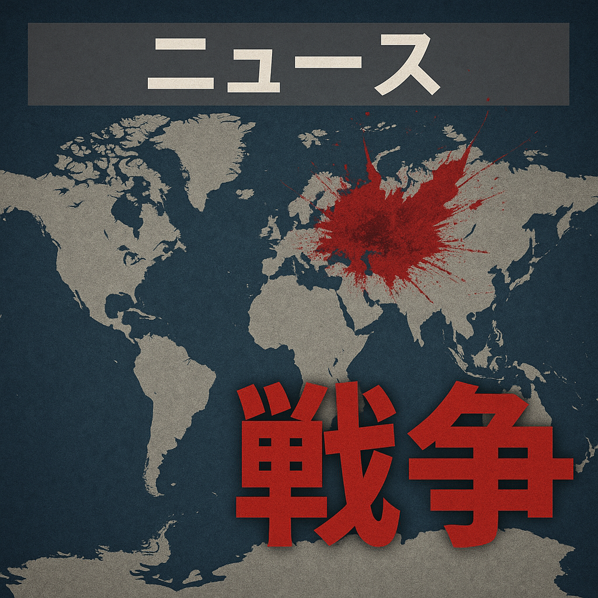

2026-03-11

① 今起きていること
イランでは、アメリカとイスラエルによる軍事攻撃が続く中、若者たちが自宅での避難生活を余儀なくされています。ミサイル攻撃の危険を受けながらも、外出を控え、ほとんど人のいない街中で日常生活を維持しようと努力しています。こうした緊張状態は、地域の安全保障環境を一層不安定にしています。
② 日本への影響
中東情勢の緊迫化は、国際的な原油価格の上昇やエネルギー供給の不安定化を通じて、日本の経済に影響を与えます。特に石油輸入に依存する日本にとっては、エネルギーコストの増大やサプライチェーンの混乱が懸念されます。また、対米・対イスラエル政策を巡る外交的な調整も求められる状況です。
③ 今後どうなるか
軍事的緊張が継続すれば、さらなる攻撃や報復が連鎖し、地域紛争の拡大リスクがあります。一方で、国際社会の介入や外交交渉が進めば、緊張緩和の可能性も残されています。イラン国内の世論や若者の動向も、情勢の流動性を左右する重要な要素となるでしょう。
④ 日本の対策
日本政府は、エネルギー安全保障の強化として代替エネルギーの推進や石油備蓄の拡充を進める必要があります。また、中東地域の安定に向けた国際的な外交努力に積極的に関与しつつ、自国民の安全確保や情報収集体制の強化を図ることが重要です。さらに、中東に関わる日本企業へのリスク管理指導も求められます。
⑤ なぜ起きたのか
この紛争の背景には、長年続く米イスラエルとイラン間の対立があります。核開発問題、地域覇権の争い、宗教・政治的対立が複雑に絡み合い、軍事行動に発展しています。特に、イランの影響力拡大を警戒する米イスラエル側の圧力と、反発するイランの姿勢が直接的な原因です。
⑥ 未来シナリオ
最悪のシナリオでは、地域全体が戦火に包まれ、国際的な大規模紛争に発展する恐れがあります。一方で、対話と交渉が進み、軍事行動が減少すれば、中東は緩やかな安定期に入る可能性もあります。若者を中心に平和を求める動きが拡大し、社会変革や国際協調が促進される未来も想定されます。
【参考情報】
- BBC News「Even under missiles we carry on living」
- 国際エネルギー機関（IEA）報告書
- 日本外務省中東情勢分析資料
- 国際危機グループ（ICG）レポート